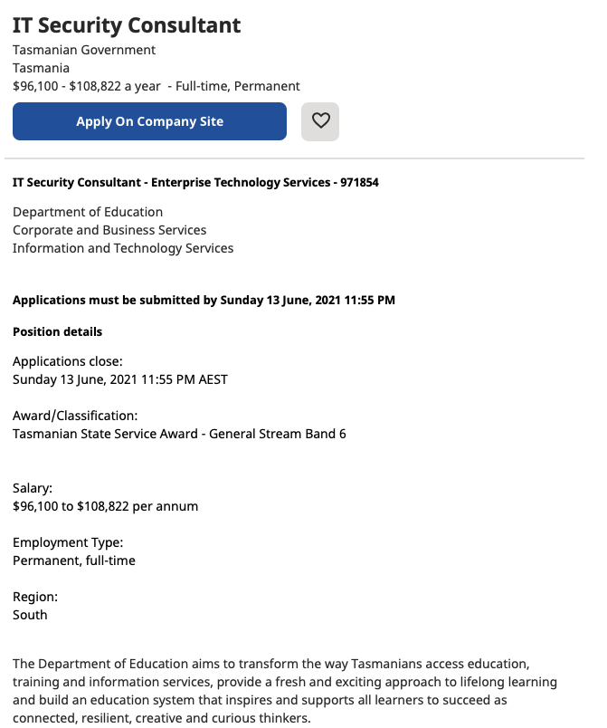
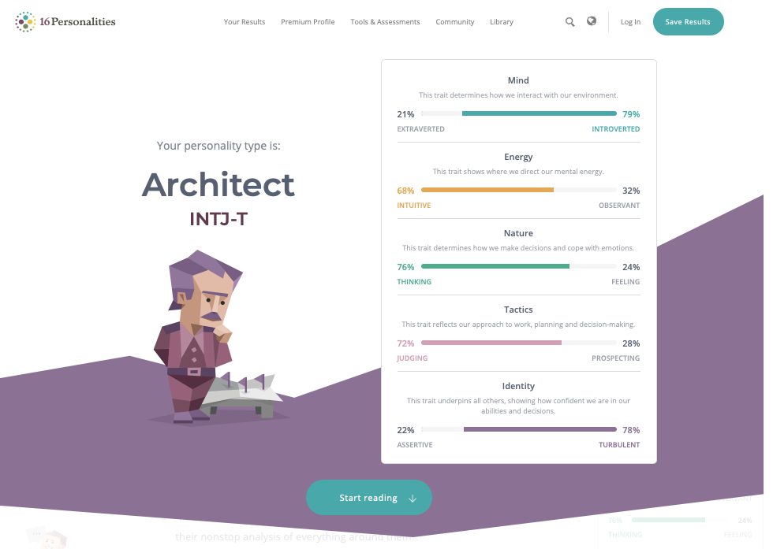

2021-06-11
My name is Trill. My student number is 3910969 and my student email is S3910969@student.rmit.edu.au, and the majority of my background is English (although there Swedish, Scottish, Peruvian and Spanish for good mix). I have completed Year 12, learnt various amount of coding languages such as AppleScript, Perl, Java, LaTeX and HTML. I've recently achieved a scoring of 79th percentile in the STAT MC and I love cycling, painting, Star Wars and learning Swedish.
My interest in IT began when I was a kid. At school we weren't really taught much - the magic happened when I came home and started learning alongside my father, a mathematician and programmer. A lot of my time was spent watching him work on fixing the oven, or else putting back together an old torch ... or even taking apart computer to give them a thorough clean.
My interest in IT in all encompassing. I couldn't say there was a particular bit that wasn't interested in. I'm interested in advancements made in either data storage, ( I got very excited when I learned there were hard drives available that could detect and even prevent bit rot!!) sharing or collection.
The idea that things are becoming more and more efficient at storing larger and larger chunks of data in smaller and smaller forms has always interested me and made me wonder what kind of advancement could come next - and whether or not I could ever be apart of that mission.
I am also interested in how it is shared (Cloud services, or home network sharing and how multiple things from your roller door to your home security cameras can be connected to your phone and main laptop). I think we're at the dawn of seeing some vast changes to the way we share data with the other 'smart' or nearly smart devices in the home (like fridges, dish washers, etc, etc,) and I want to be apart of that.
The collection of data is also a big concern for me, especially regarding any security related aspects - whether that be by drones or the cookies from a web page. I think regulating the collection of data is going to be a cornerstone of our new 'data rich' online lives and needs a lot of work.
I can see myself enjoying a career in cyber security, for instance.
I chose RMIT for several reasons. Apart from being scholastically very well regarded, I wanted to get into University without an ATAR (and 2 single subjects seems to be easiest agreed way of getting in). To test my devotion to my subjects I decided to enroll in 2 units and see how I went.
So far I have been impressed with the coursework and might even do the online OUA RMIT Bachelor of IT.
I expect to come away with a complete grounding in the basics of IT - be that cloud services, data storage, a little cyber security and maybe even some information on how networks work.
My ideal job would be an IT Security Consultant, and a posting of the type was provided by: Tasmanian Government, IT Security Consultant, 3 Jun 2021:
A snap shot of the description can be viewed below:
The position would require me to efficiently take security assessment and investigations to prevent and assess any risk to the Tasmanian Government. I would have to recommend ways or help maintain security of the IT department and help others to follow these steps - this is a good fit for me because I would be not involved with public communications as are some of the cyber security jobs. I also wouldn't have to advise shareholders or stakeholders, which comes up in a few of the cyber security jobs I've noticed at the moment. I could work primarily on problem solving for a more efficient, secure IT system.
I would ideally have 3 years of experience when it came to supporting IT departments, and have either a Cert III or above in Cyber Security, or IT or IT Systems (something related to the security and maintenance of an IT system). I would have to be competent and reliable, and have the ability to communicate well with either the team I was expected to work with to make these changes happen, or those above me to effectively explain how I was helping the IT's security.
At the moment I have the ability to work well with a team, the confidence to write detailed and thorough reports but not yet the skills required for the job. I also lack some of the verbal communication skills that would be required for the job.
My plan to obtain these skills involves completing this unit successfully, going on to then a Bachelor of IT or Cyber Security and completing it with work experience along the way. I would hopefully do well enough in the work placements to be hired by those participating companies and then steadily build up the experience I needed doing the job day in and out.
As required I took 3 tests, including Meyer Briggs, a Leadership test and a Learning Style test:


I scored 61/95 on the Leadership test from Mind Tools - Mind Tools: How Good Are Your Leadership Skills?, n.d . The indication being that I needed to improve on my team inspiration and encouragement, but that my emotional intelligence was high.
.I scored as an INTJ-T for the test from 16 Personalities: Free Personality Test, n.d
I have also been shown to be a visual learner through the test How to Study.com Learning Style Assessment, n.d
The results mean for me is more of an understanding into the kind of person I am. Overall I would say the Meyer Briggs test was fairly accurate, and the second two tests were moderately accurate (firstly because there's no such thing as a single sensory learner, as described by Vinopal (2019), and secondly because I don't have a leadership role at the moment so don't spend time giving orders.)
The test results seemed to indicate that I would be an fair choice for leadership, and could possibly struggle in an environment that was not supportive or engaged with finding the best solutions to the daily problems.
My curiosity and general keenness to learn and find the best possible solutions to a problem would suit a leadership role well yet may also make me struggle as a team member if others are not as like minded as me.
These results might influence how I work in a team to best increase collaboration or to generate better conversation about achievable outcomes. My best ability lies in problem solving and in a team this is a good thing - but only if I can collaborate with others.
These results make me think that even though my natural process is to work alone on my own projects or ideas, I have to be open and able to work in a group project where I might not necessarily be the leader. This is not a major concern because in all things it is the end result I am most interested in.
The results seem fairly accurate so I will be taking my time when forming a team to consider how I might best work with the group, and really engage. I'm someone who is enthusiastic to find the best solutions, so as long as I channel that in a group-minded setting I'll be contributing as part of a functioning, hive mind.
It is hard to say what is a good option for an IT problem to solve. My initial response would be to create a journal entry system that could taske your input across any of your Laptop, iPhone, iPad, etc and create a synced system to set daily requiorements, and see how you have exceeded them or maintained them. Of course there are loads of apps like this already after research I had to change my suggestions.
So my mind turned to something Covid related. Like making an app that could an app that allows the viewers to punch in their location and then that should generate a list of the places nearby that are Tier 1, 2, 3, and 4. These locations should be given with an estimated time of abstinent - so that even after a deep clean you cold choose not to visit it for the next week or so. But this has already been around also!
So that was that, and now I've thought of another project.
Imaging being able to find out what your expenditure was across a years worth of shopping. we know that a lot of Banks have a section in their profile on us that breaks things down into bills, groceries etc. But what if you had an app to pin point exactly where you were spending what?
My project idea is to create an application that 'reads' receipts to generate csv files that tell you what you bought (say 'milk 3l' ) and then when you bought it (on different days during the year) and how much. So that over a year you can see what you spent on milk, or lamb mince etc etc. You could accurately pin point your most expensive products and go on to find a way to decreasing them.
The motivation behind this project is to create an easy tool that people can use to analyse their shopping. It will be incredibly useful for thousands of people who want to try and make their shopping smaller, or at least accessable, to see where they are spending their money.
There is a bit of a bar to entry for this kind of information though - there are a few options that allow for the conversion of receipt to text to csv, but at that stage a lot of people still wouldn't know how to do that, or what to do with the csv. I want to make a program that makes this whole process dead easy.
I suffered through a similar project where I painstakingly recorded each line in a receipt by hand - there has to be a better way to find out how much I am spending on meat or milk!
The features of this product should be fairly simply. It will reply on clean input, that is to say your receipts are easy to read, they are clean and they don't have grime on them.
You will be required to scan them and you have to ensure that they are scanned straight, not on an angle.
Once you've scanned the receipt I would like the app to be launched, and you select how many receipts you want to open and then the app takes all the data from the receipt and turns it into a CSV file for your to later import to a spreadsheet or to a program.
The idea being that the app will read one sentence at a time, take the text from that sentence and convert it into a line of comma separated variables in the format of: item, quantity, total cost, date acquired.
A feature I imagine adding later is to say Woolworths Full Cream milk 3L and Coles Brand milk 3L would both be considered 'milk 3L' (they price match so changing prices later is not a concern).
Once you have scanned your receipts the app should be capable of creating a file of entries which it can then sort by date. This will of course contain thousands of lines and won't be very easy to look through and see any patterns. But it will be a detailed list of everything you have bought in the last year.
I would like it to further have the functionality of being able to create categories that most people would consider similar. It would be hard to see the patterns in those thousands of lines, so what about making less than 10 categories that are easy to see?
I would like the app to be able to sort data according to a few categories (these will be predetermined to make the program run quicker and make it easier to create).
The top categories I can think of are Dairy (yogurt, milk, cheese etc), Meat (lamb, mince, turkey, fish, eggs, chicken), Staples (like bread, muffins, lentils, chickpeas, pasta) Vegetables (potatoes, carrots canned tomatoes,) Spices (salt, pepper, tabasco like products) Nuts (almonds, almond flour, walnuts), Condiments (tomato sauce, Chicken Tonight style things) Treats (chocolate, chips, cakes, finger buns, store bought pizzas) Spreads (honey, peanut butter, chutney etc) and Takeout (pizzas, coffees on the go, fish and chips, burgers etc) Medicines (anything from bandages to Strepsils), House (anything from Windex to scourers) then you can really see a pattern emerging in the way you spend money. And target it if necessary.
For someone to use this app, and indeed for the testing of this app we will require the use of a scanner. I prefer the idea of an app working with a scanner rather than ust taking a photo with your phone because the accuracy of the photo can be somewhat hard to achieve - whereas scanning at home is pretty hard to mess up. The scanner should be able to save the file in either GreyScale to make text matching easier (sometimes receipts are not just black and white.)
I will also require an open source method to convert the pdf file into text. I'm not advanced enough to come up with my own OCR so I could use an open source type available like Online OCR or NanoNets, and use it to create the text that I needed to extract out of the receipts.
Or I could assume that the person using this will not use more than 1000 pages worth of receipts a month (fair because my app is designed for a single person, and not a business) and then just use Amazon Textract (which is free for usage under 1000 pages a month).
I would also need a language to code in to take the text from the OCR to make a CSV file. I would then need to use the information in that CSV file to create a report, the bit that we're really interested in. I would probably use the language Perl (I am familiar with it and its great at handling data sets).
For my project I will need a scanner, (which I have) I will need an open source OCR (which I will have to get) and I will need to be able to make the OCR work on the pdfs that I give it from the scanner.
Other skills include the ability to write code to effectively take this information (which the OCR may or may not have already stored as a CSV) and do the most important thing, create the report: set up the categories, put things in the categories and when I make the report, note the category with the highest expenditure.
Some of these skills I already have but others (especially on the side of the OCR) I will definitely need to acquire. Perhaps I have chosen a bit of an unfeasible project for a beginner, but maybe I overestimate what I don't know. It seems like an okay project, given that the OCR I will choose should handle the data extraction so that I don't have to worry about that, I just do the coding side of things.
This project will have an amazing outcome for anyone who struggles to keep up to date with their shopping or who really wants to get to grips with what their worst area of expenditure is.
I did a similar project by hand for nearly a year and it was surprising the results - our number one single item we spent the most on in a year was milk ($1099) then tomato cans ($668). Our third single biggest item was shoulder cut lamb, around $580 ish. So you really can learn quite a fair bit, just on your expenditure.
I intend to use this to save money, track my spending, see any trends, and most importantly save the thousands of hours that go into manually typing out receipts - I think others would benefit from this also !!!
Tasmanian Government, IT Security Consultant
Published: 3rd June
Viewed date: 5th June
< https://au.indeed.com/viewjob?jk=2dd067d73063d742&tk=1f7d6cu38rjep801&from=serp&vjs=3
>
16 Personalities: Free Personality Test,
N.D
Viewed Date: 1 June
< https://www.16personalities.com/free-personality-test >
Mind Tools: How Good Are Your Leadership Skills?,
N.D
Viewed date: 5th June
< https://www.mindtools.com/pages/article/newLDR_50.htm >
How to Study.com : Learning Style Assessment,
N.D
Viewed date: 5th June
< https://www.how-to-study.com/learning-style-assessment/quiz-item.asp >
L.Vinopal 'No Visual Learners: Learning Styles Aren’t Real, but We Teach to Them' Jun 16 2019, 8:38 PM
Viewed: 5th June 2021
< https://www.fatherly.com/health-science/visual-learner-learning-styles-arent-real-education-science/ >